Tentang Diginode
Diginode merupakan firmware replika Digimon V-Pet (berbasis "Pendulum Color") yang beroperasi pada mikrokontroler ESP32. Setiap unit menyimpan satu Digimon aktif yang harus dirawat, dilatih, dan dievolusikan, dilengkapi dengan fitur battle dan jogress—baik secara luring (offline) maupun terhubung dengan perangkat lain.
Perangkat keras utama:
- Layar TFT (ukuran 135×240 atau 170×320) berfungsi untuk menampilkan karakter Digimon, ikon menu, serta jam.
- Dua tombol fisik (BTN1 dan BTN2) yang digunakan untuk mengontrol seluruh navigasi.
- Dua port inframerah ("prong") di bagian atas dan bawah untuk komunikasi fisik dengan perangkat lain.
- Speaker piezo untuk keluaran suara, serta dukungan baterai dengan indikator persentase daya pada layar.
Tampilan Layar Aktual dari simulator resmi
Tangkapan layar ini diambil langsung dari simulator web proyek VPet Companion (mesin permainan dasar dari firmware), bukan sekadar ilustrasi.
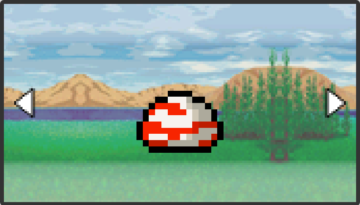
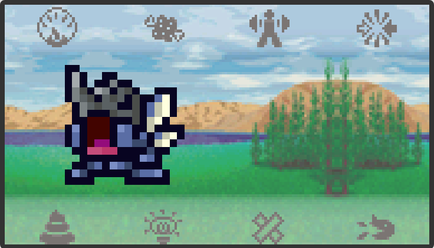
Struktur Menu Utama
Saat sedang menampilkan Digimon (layar utama) atau jam, tahan Tahan B untuk membuka MAIN MENU. Dari sana semua fitur bercabang jadi tiga:
- VPET — kembali ke layar Digimon, tempat menu perawatan harian dibuka. Rinciannya ada di tab VPET sendiri (Status, Rawat, Latihan & Evolusi, Battle).
- COMMUNICATION — fitur pertukaran data & koneksi ke perangkat lain. Rinciannya ada di tab Communication sendiri (Adapter, A-Com, Alphacom, Digirom, WiFi).
- SETTING — suara, kecerahan, jam, reset data, matikan perangkat (tab Setting).
Panduan Mulai Cepat Pengguna Baru
- Saat pertama kali dinyalakan (belum ada Digimon tersimpan), layar langsung menampilkan pemilih telur. Tekan A untuk bergeser antar telur, lalu B untuk menetaskannya.
- Rawat Digimon setiap hari: beri makan dan vitamin (menu FOOD), bersihkan kotoran (FLUSH), obati bila sakit/luka (HEAL), dan nyala/matikan lampu malam (LIGHTS).
- Latih secara rutin lewat menu TRAINING agar statnya naik dan evolusi berjalan baik.
- Setelah mencapai Stage III (Child/Rookie) ke atas, menu BATTLE dan JOGRES mulai bisa dipakai.
- Atur jam, suara, dan kecerahan lewat MAIN MENU → SETTING.
Tombol & Kontrol
Perangkat keras Diginode hanya memiliki dua tombol fisik, namun kombinasi tekan-singkat dan tekan-tahan menghasilkan tiga perintah navigasi utama: A, B, dan C.
| Tombol fisik | Aksi | Artinya |
|---|---|---|
| BTN1 tekan singkat | A | Lanjut atau geser kursor ke opsi berikutnya. Pada fase perhitungan saat latihan (training) atau pertarungan (battle), tombol A berfungsi sebagai tombol "kocok" atau shake (ditekan berulang secepat mungkin). |
| BTN1 tahan ~0.35 dtk | C | Kembali / batal — naik satu level menu, atau menutup menu jika sudah di level teratas. |
| BTN2 tekan singkat | B | Konfirmasi / masuk submenu / jalankan aksi yang sedang dipilih. Saat Digimon makan, dibersihkan, atau diobati, B juga melewati (skip) animasinya. |
| BTN2 tahan ~0.35 dtk | Buka Menu Utama | Hanya berlaku dari layar Digimon atau layar jam — langsung membuka MAIN MENU. |
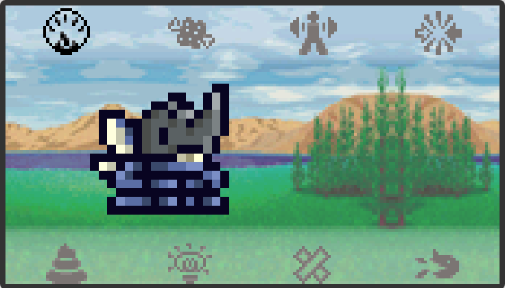
Membuka & menutup menu rawat
- Dari layar utama, tekan A sekali untuk membuka menu 7-slot (STATUS/FOOD/TRAINING/BATTLE/FLUSH/LIGHTS/HEAL).
- Tekan A lagi untuk bergeser ke slot berikutnya; setelah slot terakhir, menu tertutup otomatis.
- Tekan B untuk membuka submenu slot terpilih atau menjalankan aksinya.
- Tekan C untuk naik satu level, atau menutup menu dari level teratas.
- Menu yang dibiarkan menyala 60 detik tanpa tombol apa pun ditutup otomatis, kembali ke layar biasa.
Gestur khusus
- A + B bersamaan (dalam 0.4 detik) saat Digimon dalam keadaan mati langsung membuka pemilih CHANGE (ganti ke slot cadangan atau telur baru) tanpa harus membuka menu dulu.
- Saat pemilih telur/cadangan terbuka: A = berikutnya, B = pilih, C = sebelumnya.
- Saat menjelajah ALBUM (ensiklopedia spesies): A = lanjut terus (tidak bisa mundur), B atau C = keluar.
- Menu STATUS tidak bisa ditutup dengan B (B tidak melakukan apa-apa di halaman status) — gunakan C atau biarkan idle 60 detik.
VPET
Cabang pertama MAIN MENU — ini layar Digimon itu sendiri, tempat semua perawatan, latihan, evolusi, dan battle harian berlangsung lewat menu 7-slot (lihat tab Kontrol untuk cara bukanya).
Menu STATUS
Slot pertama (ikon paling kiri) membuka 6 halaman data Digimon. Tekan A untuk bergeser antar halaman — B tidak melakukan apa pun di sini, jadi aman untuk hanya "melihat-lihat".
P1 AGE / WEIGHT
Umur Digimon (dalam tahun permainan) dan berat badannya dalam gram. Berat naik saat makan/vitamin dan turun sedikit setiap sesi latihan atau battle.
P2 HUNGRY / STRENGTH
Dua baris hati, masing-masing 4 slot: Hungry (isi dengan MEAT) dan Strength (isi dengan VITAMIN). Kosong total membuat Digimon "memanggil" minta dirawat.
P3 EFFORT / CONDITION
Effort naik dari sesi TRAINING. Condition (mood/kesehatan umum) turun setiap kali ada "kesalahan rawat" (care mistake) dan jumlah slotnya bertambah seiring Digimon naik stage (2 slot di Baby, 3 di Child, 4 di Adult ke atas).
P4 WIN RATE
Persentase kemenangan battle, plus rincian jumlah Win dan Loss sepanjang umur Digimon ini.
P5 DP
Jatah battle (Digimon Point) dengan bar hijau/merah. Setiap battle memotong 1 DP; batas maksimum tergantung stage (lihat tabel di tab Battle). DP habis = tidak bisa battle sampai terisi lagi lewat VITAMIN.
P6 TYPE / FLAGS
Atribut (Free/Vaccine/Data/Virus) serta dua status Battle dan Jogress — YES (hijau) atau NO (merah) lengkap dengan alasannya, misalnya "Need Stage III" atau "No jogress line".
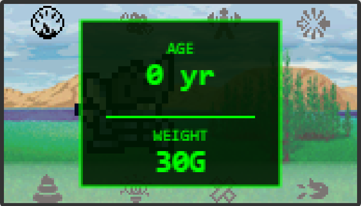
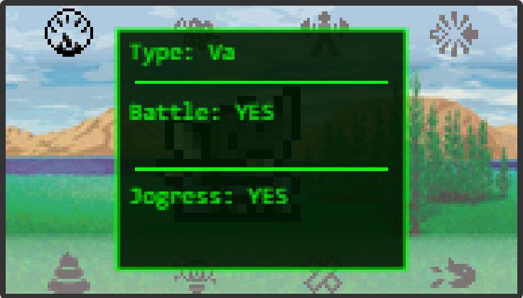
Kode singkat atribut di P6: Fr=Free, Va=Vaccine, Da=Data, Vi=Virus.
Merawat Digimon
Empat slot menu menangani perawatan harian: FOOD, FLUSH, HEAL, dan LIGHTS.
FOOD — Makan & Vitamin
Buka slot FOOD, lalu A untuk memilih MEAT (daging) atau VITAMIN, dan B untuk memberikannya.
- MEAT mengisi satu slot hati Hungry (maksimum 4) dan menambah sedikit berat badan.
- VITAMIN mengisi satu slot hati Strength dan menambah 1 DP (sampai batas maksimum stage-nya) — ini satu-satunya cara mengisi ulang DP.
- Memberi vitamin 4 kali berturut-turut tanpa diseling latihan sedikit menaikkan risiko luka pada battle berikutnya — seling dengan TRAINING.
- Digimon yang sedang sakit menolak makan sampai diobati lebih dulu.
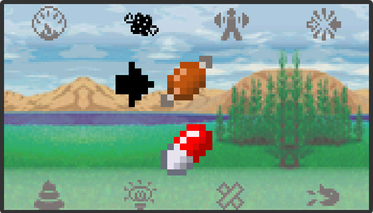
FLUSH — Membersihkan kotoran
Kotoran muncul otomatis seiring waktu (lebih sering di stage awal). Buka slot FLUSH dan tekan B untuk membersihkannya.
Kalau dibiarkan menumpuk sampai 8 kali tanpa dibersihkan, Digimon otomatis jatuh sakit — jadi jangan ditunda terlalu lama.
HEAL — Obat & Perban
Buka slot HEAL, A untuk memilih MEDICINE (obat, untuk Sick) atau BANDAGE (perban, untuk Injured), lalu B untuk memberikannya.
- Sick biasanya muncul karena kotoran menumpuk atau dibiarkan terlalu lama — sembuh dengan MEDICINE.
- Injured punya kemungkinan muncul setiap kali battle kalah (persentasenya naik kalau Digimon sering diabaikan, dan turun kalau sering menang battle atau rutin dilatih) — sembuh dengan BANDAGE.
- Kedua kondisi ini bisa fatal jika dibiarkan terlalu lama (sekitar 6 jam) atau kambuh terlalu sering (12 kali) — jangan ditunda.
LIGHTS — Lampu, Cold Mode, Change, Album
Slot ini punya 4 pilihan, digeser dengan A:
- LIGHTS — menyala/matikan "lampu kamar" Digimon. Menyalakannya saat Digimon tidur akan membangunkannya (sedikit menaikkan risiko luka) dan ia tetap terjaga selama 15 menit sebelum kembali tidur sesuai jadwal jam.
- COLD MODE — membekukan Digimon aktif: statistik dan jam berhenti berjalan untuknya (jam perangkat sendiri tetap jalan). Cocok dipakai saat ingin "menitipkan" Digimon tanpa risiko lapar/sakit selama dibawa-bawa. Semua aksi rawat dan battle terkunci selama Cold Mode aktif.
- CHANGE — menukar Digimon aktif dengan salah satu slot cadangan (maksimum 2 cadangan lain berjalan paralel), atau menetaskan telur baru dari keluarga manapun yang sudah terbuka.
- ALBUM — menjelajah seluruh daftar spesies yang pernah terdata di firmware, gaya "Pokedex": hanya maju, tidak ada tombol mundur.
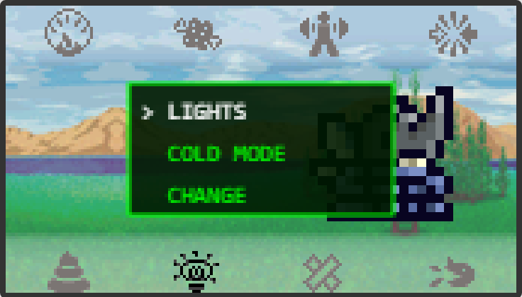
Latihan, Evolusi & Jogress
Slot ketiga (TRAINING) menaikkan statistik lewat mini-game kocok (shake); evolusi dan jogress berjalan di atas statistik dan kondisi yang terkumpul dari situ.
Mini-game TRAINING
- Buka slot TRAINING dan tekan B untuk mulai.
- Saat fase hitungan (COUNT) berjalan, tekan A berulang-ulang secepat mungkin — ini berfungsi sebagai aksi "mengocok" (shake) Digimon.
- Semakin banyak & semakin cepat kocokan (shake) terkumpul, semakin tinggi warna indikator yang dicapai dan semakin besar kenaikan Strength/Effort yang didapat, dengan sedikit pengurangan berat badan.
- Latihan yang bagus juga menurunkan sedikit risiko luka (injury rate) untuk battle berikutnya.
Tangga evolusi
Setiap Digimon melewati 7 tahap, ditulis dengan angka Romawi di layar:
Evolusi berjalan otomatis (dengan animasi tirai) begitu umur di stage saat ini dan statistik perawatannya memenuhi syarat jalur evolusi Digimon tersebut. Perawatan yang buruk (banyak kesalahan rawat, sering sakit) bisa membuat evolusi "gagal" dan mengarah ke bentuk yang kurang ideal, bukan berhenti sama sekali.
Jogress (penggabungan)
Jogress menggabungkan Digimon aktif dengan Digimon lain menjadi satu bentuk evolusi baru. Ada di slot BATTLE, cabang JOGRES:
- JOGRES > BACKUP — memilih salah satu slot cadangan sendiri sebagai partner. Jika kombinasinya valid, jogress langsung terjadi dan Digimon cadangan tersebut terpakai habis (hilang setelah jogress).
- JOGRES > CONNECT — menghubungkan ke perangkat lain untuk jogress langsung dengan Digimon di perangkat tersebut. Lewat prong IR belum didukung untuk sekarang; gunakan JOGRES > BACKUP di atas sebagai alternatif.
Jogress hanya tersedia bila Digimon aktif punya "jalur jogress" terdaftar (lihat flag Jogress di halaman STATUS P6) dan sedang tidak sakit/tidur/Cold Mode.
Battle & Quest
Slot keempat membuka dua cabang: BATTLE (lawan komputer atau perangkat lain) dan JOGRES (lihat sub-tab Latihan & Evolusi). Battle baru bisa dipakai mulai Stage III (Child) dan memotong 1 DP setiap kali dimainkan.
| Stage | Maks. DP |
|---|---|
| I – II (Baby) | Tidak ada DP, tidak bisa battle |
| III – V (Child / Adult / Perfect) | 50 |
| VI (Ultimate) | 60 |
| VI+ (Super Ultimate) | 70 |
BATTLE > QUEST — melawan komputer
Daftar AREA 1, 2, 3, … terbuka satu per satu — menang di satu AREA membuka AREA berikutnya. Setiap battle berjalan dengan pola yang sama:
- Tekan B pada AREA yang dipilih untuk memulai.
- Saat fase hitungan (COUNT) muncul, kocok dengan menekan A berulang — ini menentukan seberapa kuat serangan pertama.
- Pertarungan berjalan otomatis bergilir, dipengaruhi statistik dan keunggulan atribut (lihat segitiga di bawah).
- Hasil (menang/kalah) ditampilkan, lalu kembali ke menu BATTLE.
BATTLE > CONNECT — melawan perangkat lain
Memilih item di sini hanya mencatat permintaan koneksi — perangkat akan mulai menghubungkan begitu kembali ke layar utama.
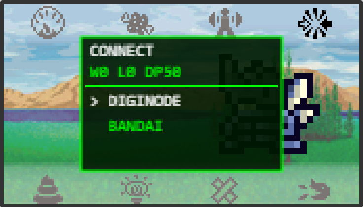
- DIGINODE > PRONG — rencananya battle melawan Diginode lain lewat sentuhan prong IR (atas/bawah sesuai setting PRONG). Belum didukung di Diginode untuk sekarang.
- DIGINODE > WIFI — battle yang sama tetapi lewat jaringan WiFi. Saat ini baru bisa antar-Diginode yang berada di jaringan WiFi yang sama; battle online lintas internet (lewat wificom.dev, lihat tab Communication) masih dalam pengembangan.
- BANDAI > PENDULUM COLOR / DIGIMON COLOR — battle melawan mainan V-Pet Bandai asli dengan menempelkan prong. Lakukan kocokan (shake) seperti pada perangkat aslinya, lalu tunggu balasan dari perangkat tersebut.
- BANDAI > MONO OTHER — mode kompatibilitas untuk berbicara dengan Digimon generasi lama (hitam-putih/"Mono").
Perangkat asli yang sudah teruji battle/jogress lewat BANDAI
| Jenis | Model yang sudah dicoba |
|---|---|
| Mono (hitam-putih) | Digimon 20th, DMX |
| Color | Pendulum Color, Digimon Color |
| Digivice | D2 Color 25th, D3 Color, D-Ark Color |
Model lain di luar daftar ini kemungkinan besar tetap jalan selama protokolnya sejenis, tapi belum dicoba langsung.
Segitiga keunggulan atribut
Atribut Free netral terhadap ketiganya — tidak mendapat maupun memberi bonus kerusakan.
Communication
Cabang kedua MAIN MENU — dibuka lewat MAIN MENU → COMMUNICATION (tahan Tahan B dari layar utama). Berisi semua fitur pertukaran data dan kompatibilitas dengan mainan V-Pet asli maupun internet.
ADAPTER — jembatan Mono ⇄ Color
Fitur ini membuat Diginode jadi penerjemah protokol: menjembatani mainan V-Pet Mono (generasi hitam-putih lama) dan mainan Pendulum Color asli supaya keduanya bisa battle satu sama lain, padahal secara protokol aslinya tidak saling kompatibel.
Cara menyambungkan
- Buka COMMUNICATION → ADAPTER di Diginode.
- Tempelkan mainan Mono (hitam-putih) ke prong ATAS, mainan Color ke prong BAWAH.
- Layar langsung menampilkan Wait Both dengan petunjuk Tekan C (Mono) / dan OK (Color) — tekan tombol aksi/battle di kedua mainan asli itu sendiri (tombol C di mainan Mono, tombol OK di mainan Color), bukan tombol di Diginode.
- Diginode mendengarkan terus sampai kedua sisi terbaca. Begitu satu sisi masuk, layar langsung menunjukkan datanya (mis. M: 65) sambil menunggu sisi satunya (Waiting Color...), disertai bunyi beep setiap satu sisi berhasil ditangkap.
- Setelah kedua sisi terbaca, Diginode menghitung sendiri siapa yang menang (berdasarkan rasio power masing-masing), mengonversi datanya ke format tiap mainan, lalu mengirim hasilnya balik ke KEDUA mainan hampir bersamaan.
- Animasi battle berjalan ±18 detik (durasi tetap, mengikuti mainan asli), lalu layar menampilkan Battle Done! + siapa yang menang, bertahan 3 detik, lalu kembali siap untuk ronde berikutnya.
Tahan Tahan BTN1 untuk keluar dari mode ini kapan saja.
Simulasi tampilan, direkonstruksi persis dari kode layar AdapterScreen.cpp & main.cpp — bukan screenshot langsung (layar ini firmware-only, tidak ada di simulator browser).
A-COM
Fitur pertukaran data ala A-Com/D-Com pada mainan V-Pet asli, dengan tiga pilihan jalur pengiriman: SERIAL, BTCOM, atau WIFICOM. Ketiganya berbagi tampilan layar yang sama, cuma isinya yang berbeda sesuai jalur yang dipilih.
Membaca layar A-COM
- Judul + lencana prong (merah) — port prong yang aktif saat ini (ikut setting PRONG), selalu tampil di pojok kanan atas.
- Lencana mode (biru) — jalur yang sedang dipakai: SERIAL / BLE (nama internal BTCOM) / WIFI (nama internal WIFICOM).
- STATUS — titik warna + kondisi koneksi saat ini (kuning = menunggu/proses, hijau = terhubung/berhasil, abu = berhenti).
- INFO — detail jalur yang aktif: alamat MAC (BTCOM), SSID/topic MQTT (WIFICOM), atau cara pakainya (SERIAL).
- DATA — data mentah terakhir, diawali Rx: kalau baru diterima (disertai bunyi beep) atau Tx: kalau baru dikirim.
Tahan Tahan BTN1 untuk kembali ke menu Communication.
Simulasi tampilan, direkonstruksi dari kode layar AcomScreen.cpp & main.cpp (teks status persis seperti aslinya) — bukan screenshot langsung.
SERIAL
Lewat kabel USB ke komputer — cocok untuk debug atau mengirim/menerima data dari aplikasi/script di PC. Layar menunjukkan kecepatan port (Baud: 9600).
BTCOM
Lewat Bluetooth Low Energy (BLE) ke HP, PC, atau perangkat lain yang mendukung BLE — tanpa kabel atau tempel prong. Status berjalan dari Starting BLE... → Advertising... (menunggu disambung) → Connected!, dan info menampilkan alamat MAC Diginode.
ALPHACOM — Wiki
Ensiklopedia kode A-Com di dalam perangkat, disusun per kategori generasi/model mainan. Pilih kategori, lalu pilih kodenya — tiap kode punya data mentah yang langsung dikirim lewat prong begitu dipilih.
Navigasi: A geser kategori/kode, B buka/kirim, C kembali ke daftar kategori.
Simulasi tampilan, direkonstruksi dari kode layar CarouselMenuScreen.h & AcomWikiMenuScreen.h — bukan screenshot langsung.
17 kategori, disusun per generasi mainan
Isinya lebih ke arah "wiki" komunitas: kode reset, cara menyambung ke warna/tipe mainan tertentu, sampai pemicu jogress tertentu — dengan nama kode yang mudah dibaca manusia.
| Kategori | Contoh kode di dalamnya |
|---|---|
| Digital Monster X | Reset · Connection to a DMX1 Black |
| Pendulum Original 1998 | Punching Bag · Jogress with Vaccine Adult 1 |
| Pendulum Color · Pendulum Cycle · Pendulum X · Pendulum Z · Pendulum 20th | kode khusus tiap generasi Pendulum |
| Digital Monster 20th / Color | kode khusus seri Digital Monster |
| D Ark · D2 Complete · D3 · D Cyber | kode khusus seri Digivice |
| Rookie · Battle | kode umum per kategori tema |
DIGIROM
Sama seperti ALPHACOM — kategori → daftar kode → kirim lewat prong — tapi isinya 20 kategori menurut generasi mainan yang berbeda, dan kodenya lebih ke arah fungsional: langsung memengaruhi jalannya game di mainan penerima, bukan sekadar informasi.
Navigasi: A geser kategori/kode, B pilih/jalankan, C kembali.
Simulasi tampilan, direkonstruksi dari kode layar CarouselMenuScreen.h & DigiromMenuScreen.h — bukan screenshot langsung.
20 kategori, disusun per generasi mainan
| Kategori | Contoh kode di dalamnya |
|---|---|
| Digimon Xros Mini | Xros Mini battle |
| Pen X | real toy wins/loses (against Kuwagamon X) · trade meat-M |
| Digimon Colors · PENDULUM Colors · Pen Cycle · Pen Original · Pen Z · Pen 20th · Pen Progress | kode khusus tiap generasi Pendulum/Color |
| Digivice D2 · D3 · D3 Colors · D-Scanner · Accel · iC · DataLink | kode khusus tiap seri Digivice |
| Digimon 1997 · Digimon Mini · Digimon X · Digimon 20th | kode khusus generasi mainan tsb. |
Contoh isi kode yang sebenarnya dikirim: memaksa menang/kalah di battle tertentu ("real toy wins against Kuwagamon X"), mengirim item untuk trade (meat, protein, aqua orb, dst.), atau memicu jogress langsung ke Digimon tertentu.
WiFi — hubungkan Diginode ke internet
Dua hal yang berbeda tapi saling berkaitan: WIFI CONF (sekali di awal, menyambungkan radio WiFi Diginode + akun online) dan A-COM > WIFICOM (dipakai sehari-hari, untuk benar-benar bertukar data lewat internet setelah tersambung).
1. Daftar akun di wificom.dev
Diginode memakai layanan pihak ketiga WiFiCom (wificom.dev) sebagai jembatan internetnya — layanan ini dibuat untuk "menyambungkan virtual pet favoritmu ke dunia online", bukan dioperasikan oleh proyek VPet Companion sendiri.
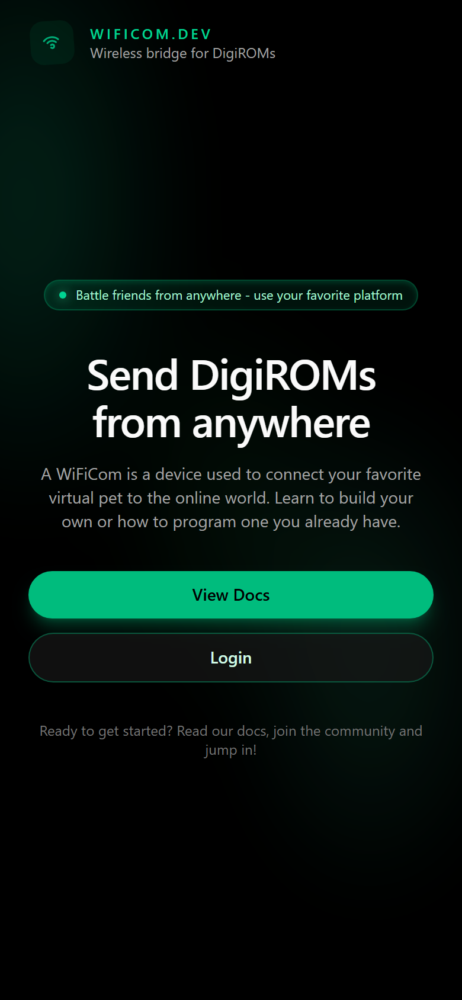
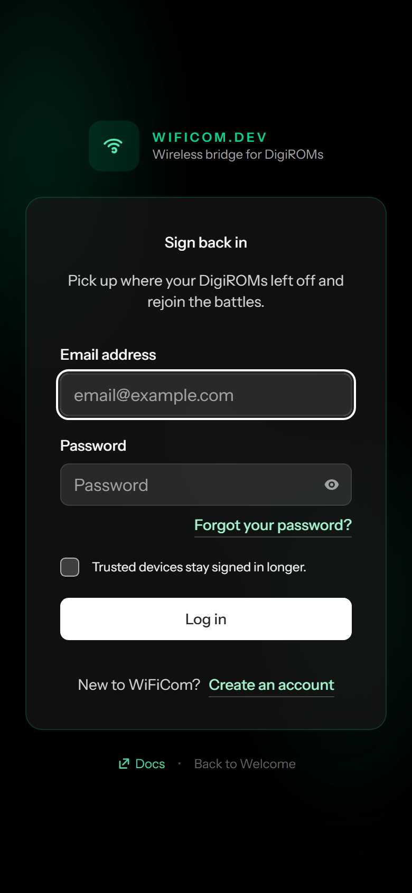
- Buka https://wificom.dev/ di HP/komputer.
- Klik Login — kalau belum punya akun, klik tautan Create an account di halaman itu dan daftar pakai email & password.
- Setelah masuk, cari bagian WiFiComs, klik New Device, beri nama perangkatmu, lalu Create Device.
- Di halaman device yang baru dibuat, isi SSID & password WiFi rumah supaya ikut dimasukkan otomatis ke file konfigurasi.
- Unduh file secrets.json yang dihasilkan — isinya WiFi, alamat broker MQTT, kredensial, dan ID perangkatmu.
2. Pasang di Diginode lewat SETTING > WIFI CONF
- Di Diginode: MAIN MENU → SETTING → WIFI CONF.
- Diginode sementara jadi hotspot WiFi sendiri bernama VPET_COMPANION_xxxx (4 digit terakhir id unik perangkatnya) — pindai kode QR di layar, atau sambung manual ke SSID itu.
- Buka browser di HP/komputer yang baru tersambung, kunjungi 192.168.4.1.
- Pilih Upload secrets.json, pilih file yang diunduh dari wificom.dev tadi, lalu Upload & Restart.
- Diginode restart dan otomatis tersambung ke WiFi rumah serta akun wificom.dev-mu.
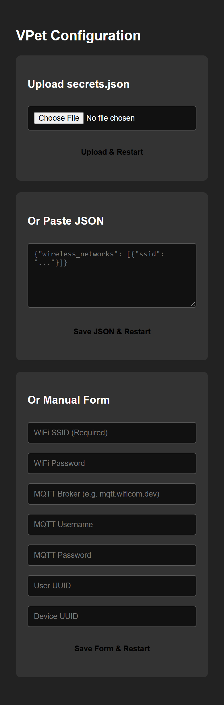
Halaman ini punya 3 cara mengisi konfigurasi, pilih salah satu saja:
| Cara | Kapan dipakai |
|---|---|
| Upload secrets.json | Paling gampang — tinggal pilih file hasil unduhan dari wificom.dev lewat Choose File, lalu Upload & Restart. |
| Paste JSON | Kalau isi secrets.json-nya mau ditempel langsung sebagai teks (mis. dari HP yang filenya susah diunggah), bukan lewat pemilih file. |
| Manual Form | Isi satu-satu manual: WiFi SSID (wajib), WiFi Password, MQTT Broker, MQTT Username, MQTT Password, User UUID, Device UUID — berguna untuk ganti satu nilai saja tanpa unduh ulang file. |
3. Pakai lewat A-COM > WIFICOM
Setelah tersambung, data A-Com yang dikirim lewat COMMUNICATION → A-COM → WIFICOM mengalir lewat internet (broker MQTT wificom.dev), bukan lewat prong fisik — jadi bisa bertukar data dengan Diginode atau V-Pet lain yang juga online, walau tidak berada di tempat yang sama.
Setting
Dibuka lewat MAIN MENU → SETTING. Geser dengan A, ubah/pilih dengan B, kembali ke Main Menu dengan C.
| Item | Pilihan | Keterangan |
|---|---|---|
| PRONG | ATAS / BAWAH | Port prong IR mana yang dipakai untuk ADAPTER, A-Com, DigiROM, dan battle perangkat. |
| SOUND | OFF / LOW / MID / HIGH | Volume speaker piezo. |
| BRIGHT | 20% / 40% / 60% / 80% / 100% | Kecerahan backlight layar — makin rendah, makin hemat baterai. |
| BG | beberapa tema | Warna/tema latar layar utama. Tekan B untuk membuka galeri pilihan tema. |
| WIFI CONF | — | Membuka konfigurasi WiFi lewat QR + browser (lihat tab Communication, sub-tab WiFi, untuk langkah lengkap termasuk daftar akun wificom.dev). |
| SET CLOCK | — | Satu-satunya tempat mengatur jam. A = +1 (tahan = cepat), B = pindah field / simpan. |
| RESET DATA | NO / YES | Menghapus Digimon aktif & semua slot cadangan, lalu membuka pemilih telur baru. Jam dan setting lain tidak ikut terhapus. |
| POWER OFF | 2× tekan B | Tekan B sekali untuk bertanya "SURE? B = YES", tekan B sekali lagi untuk benar-benar mematikan. |
Daya & Baterai
Diginode mengatur dayanya sendiri lewat beberapa tingkat hemat energi, khusus saat sedang di layar Digimon atau layar jam.
| Setelah tanpa tombol selama | Perangkat masuk ke | Yang terjadi |
|---|---|---|
| 20 detik | Redup | Backlight turun ke 20%, layar digambar lebih jarang. Tombol apa pun langsung mengembalikannya terang dan tetap berfungsi normal. |
| 2 menit | Light Sleep | Layar & backlight mati total, prosesor tidur. Digimon tetap "berjalan" (dicek tiap 10 detik). Tekan tombol apa pun untuk membangunkan layar — penekanan ini hanya membangunkan, belum dihitung sebagai A/B. |
| 15 menit | Deep Sleep | Digimon disimpan ke memori & ke penyimpanan permanen, layar benar-benar mati. Perangkat bangun sendiri tiap 30 menit hanya untuk menjalankan waktu Digimon, lalu tidur lagi. Tekan BTN1 atau BTN2 untuk bangun penuh. |
Di luar layar Digimon/jam (sedang di dalam menu, ACom, atau Adapter), aturannya lebih sederhana: layar mati total setelah 60 detik tanpa tombol (ACom hanya meredup, tidak mati total).
POWER OFF manual
Berbeda dari Deep Sleep otomatis: setelah SETTING → POWER OFF dikonfirmasi, semua data disimpan dan perangkat benar-benar mati tanpa timer bangun otomatis — hanya tombol yang bisa membangunkannya.
Karena waktu "beku" tanpa referensi jam saat mati total, begitu dinyalakan kembali perangkat akan meminta SET CLOCK terlebih dahulu sebelum kembali ke layar Digimon.
Baterai
Persentase baterai dihitung dari tegangan sel (kira-kira 3.2V = 0%, 4.15V = 100%) dan ditampilkan di layar bersama indikator sedang mengisi daya atau tidak.
Hemat baterai: turunkan BRIGHT, kecilkan atau matikan SOUND, dan gunakan POWER OFF manual saat tidak dipakai dalam waktu lama (lebih hemat daripada mengandalkan Deep Sleep otomatis).
Pesan & Istilah
Daftar pesan singkat yang muncul di layar, dan istilah yang dipakai berulang di seluruh panduan ini.
Pesan di layar
| Pesan | Artinya / yang harus dilakukan |
|---|---|
| NOT AT STAGE I | Aksi ini (biasanya CHANGE ke telur baru) hanya boleh dari Baby I. |
| COLD MODE ON | Aksi dibatalkan karena Cold Mode sedang menyala — matikan dulu lewat LIGHTS > COLD MODE. |
| BUSY | Sedang ada training/battle/quest berjalan — tunggu selesai. |
| NOTHING TO SWAP | Tidak ada slot cadangan atau telur baru yang tersedia untuk CHANGE. |
| CAN'T CHANGE | Perpindahan slot gagal — coba lagi dari menu LIGHTS > CHANGE. |
| CAN'T HATCH | Telur yang dipilih gagal ditetaskan. |
| JOGRESS! | Jogress berhasil — Digimon berevolusi lewat penggabungan. |
| CAN'T JOGRESS | Jogress gagal/ditolak — kombinasi partner tidak valid. |
| DEAD | Digimon aktif sudah mati — gunakan A+B bersamaan untuk mengganti. |
| ASLEEP | Digimon sedang tidur — aksi ini hanya bisa dilakukan saat ia bangun. |
| SICK | Digimon sedang sakit/luka — obati dulu lewat HEAL. |
| NO PARTNER | Tidak ada Digimon lain (di slot cadangan) yang bisa dijadikan partner jogress. |
| NO JOGRESS | Ada partner, tapi tidak ada kombinasi jogress yang cocok dengannya. |
| NOT AVAILABLE | Fitur koneksi yang dipilih sedang tidak tersedia di perangkat ini. |
| CAN'T BATTLE | Belum Stage III, atau DP sudah habis (lihat flag Battle di STATUS P6). |
Istilah penting
Stage — tingkat evolusi, ditulis angka Romawi I sampai VI+ (Baby I/II → Child → Adult → Perfect → Ultimate → Super Ultimate).
Atribut — Free, Vaccine, Data, atau Virus; menentukan keunggulan serangan di battle.
DP — jatah battle yang terpakai 1 per pertarungan dan terisi ulang lewat VITAMIN.
Care mistake — kesalahan rawat (membiarkan panggilan lapar/kekuatan terlalu lama, mengganggu tidur, dll.) yang mengurangi Condition.
Cold Mode — mode beku untuk Digimon aktif; statistiknya berhenti berjalan sampai dimatikan lagi.
Jogress — penggabungan dua Digimon menjadi satu bentuk evolusi baru.
Prong — dua port inframerah (atas/bawah) tempat menempelkan perangkat lain untuk bertukar data atau battle.
Backup slot — Digimon lain yang disimpan paralel (maksimum 2) selagi satu Digimon jadi yang aktif di layar.